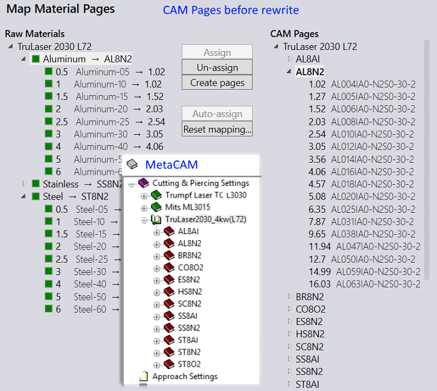
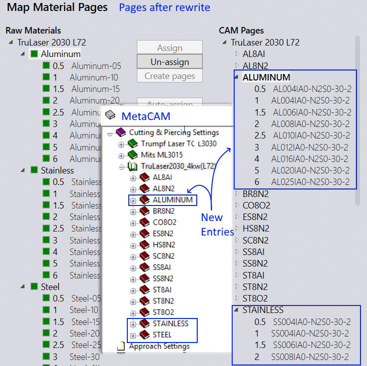
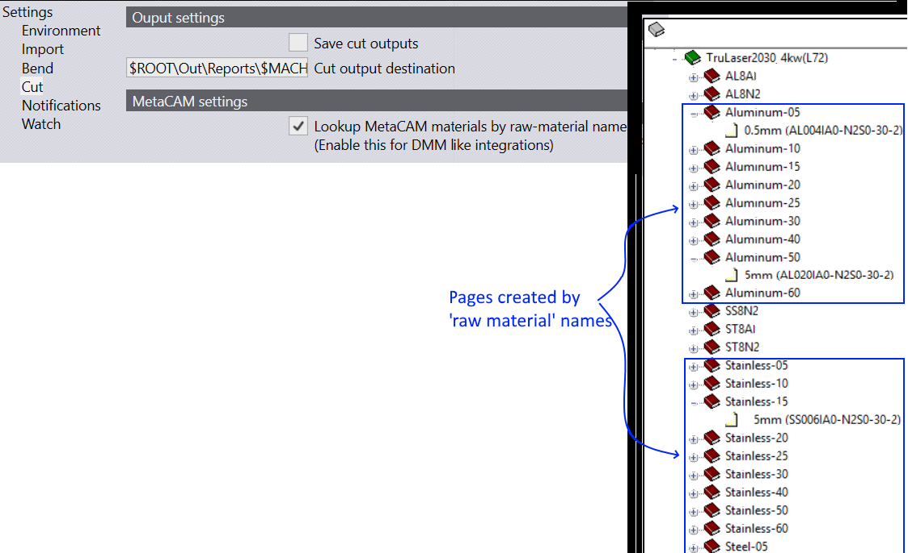

Praxis can rewrite MetaCAM laser database with Praxis material or raw-material entries. This is especially useful for users who integrate external production planning and nesting system like Aquila DMM with Praxis. To create laser pages by Praxis materials:
● Open the Page Mapping Dialog in Praxis and assign condition pages to the Praxis raw – materials.

● Now select the parent level Material node from left – hand – side Raw Materials tree and hit Create pages button to create new pages from the mapped ones.

Sometimes, DMM is configured with raw – material names instead of the material, thickness hierarchy. In this scheme:
● Raw material (material + thickness) itself is added to the material list in MetaCAM.
● And a single page is added for each material in the laser database
Set Lookup MetaCAM material by raw – materials… option in factory • settings • cut enable this style of page generation. When this style is enabled, Praxis generates pages by raw – material names and assigns them to parts at the time of auto – tooling.
Below is the snapshot of pages generated in this style.
